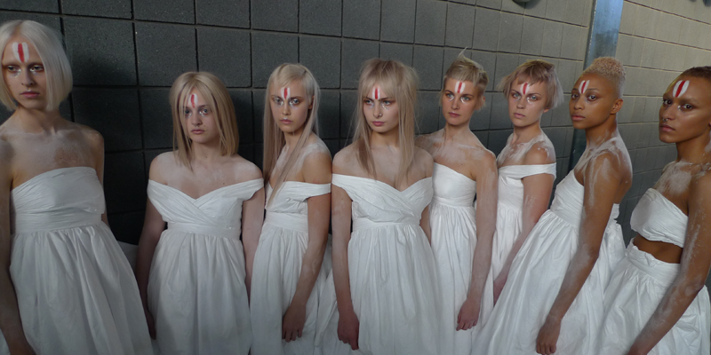
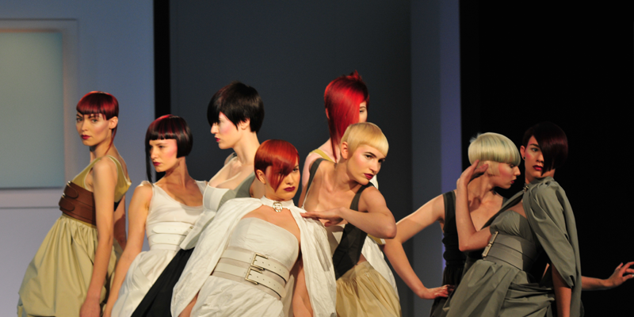

Aandacht voor de nieuwste technieken in knippen en kleuren. Unieke, persoonlijke coupes waar iedereen een goed gevoel bij krijgt.
Afspraak maken ContactEen coupe die past bij je haarstructuur, gezichtsvorm en persoonlijkheid.
Professioneel kleuradvies en een kleur die perfect bij je past.
Tips om je coupe thuis mooi te houden.
Professionele verzorging van Goldwell, Sassoon, Artisan en Nook – ook te koop in de salon.


Sinds 1984 de plek waar haarmode écht leeft, in een sfeervol pand aan de rand van de binnenstad. Geïnspireerd door Londen en de natuurlijke Sassoon-stijl, en door jaarlijkse bijscholing altijd op de hoogte van de trends.
Kies een dag en tijd binnen onze openingstijden.
Straelseweg 5, 5911 CL Venlo
Tel. 077-3540723
margashairstyling.venlo@ziggo.nl
Di t/m vr: 08:00–18:00
Za: 08:00–17:00
Ma en zo: gesloten
Venlo en omgeving